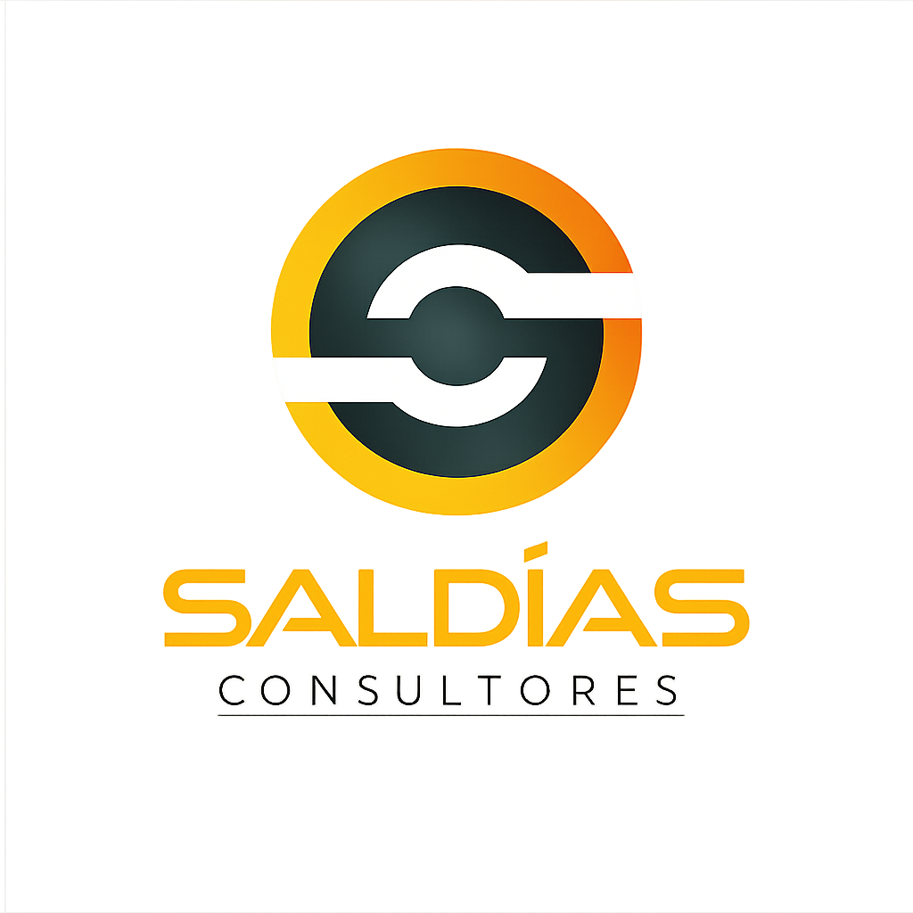

Más de 20 años optimizando operaciones en construcción, minería e industria
oramos resultados operacionales en empresas industriales
Mejoramos el desempeño operacional de empresas industriales mediante consultoría especializada en seguridad, salud ocupacional y calidad.
Consultora especializada en gestión integrada y desempeño operacional, con más de 20 años de experiencia en proyectos industriales.
Trabajamos en construcción, minería y operaciones, integrando seguridad, salud ocupacional y calidad, productividad y gestión en terreno.
Con formación y certificación como Auditor Líder en sistemas de gestión ISO, aportamos una mirada estructurada y orientada a resultados.
Diagnóstico y planificación estratégica
Evaluación de la operación y definición de lineamientos para mejorar desempeño y resultados.
Sistemas de gestión
Diseño y estructuración de sistemas alineados a la realidad operacional de cada empresa.
Productividad y desempeño operacional
Identificación y ejecución de acciones orientadas a eficiencia, control y resultados.
Coaching operacional y liderazgo
Acompañamiento a equipos para fortalecer liderazgo, cultura operacional y toma de decisiones.
Escríbenos directamente:
contacto@saldiasconsultores.cl